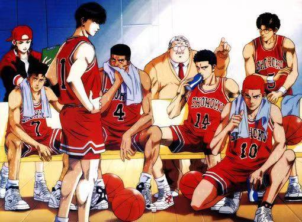
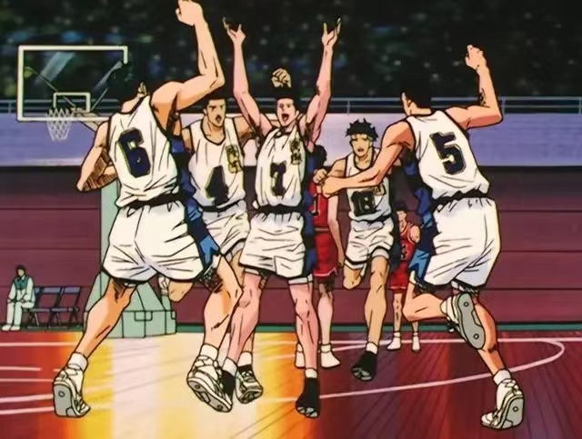
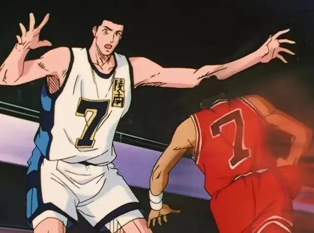
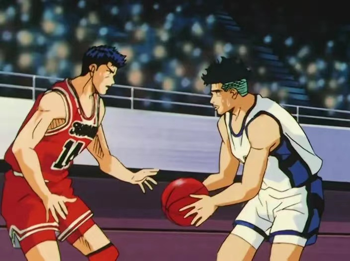
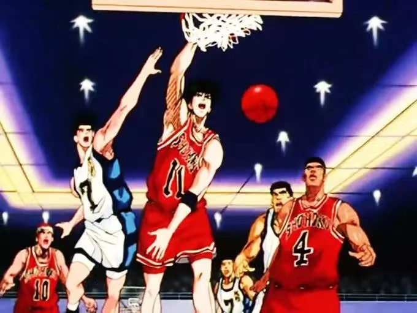
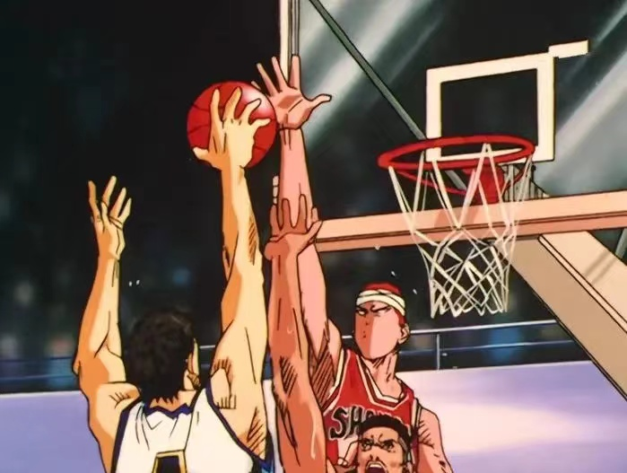
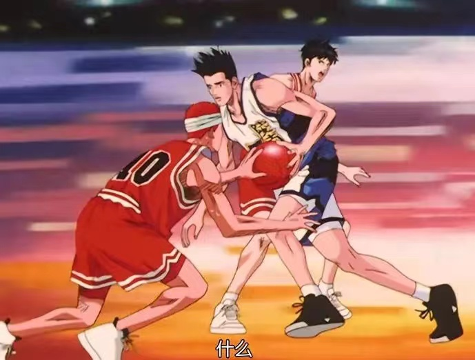
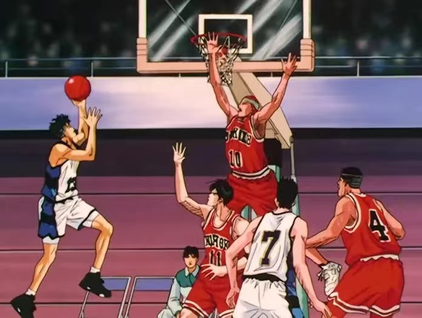
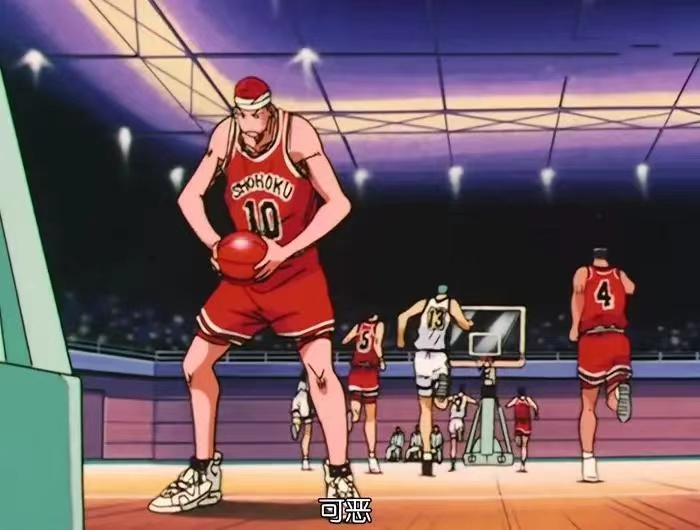

湘北胜
70：66


倍受瞩目的第二场比赛湘北对抗宿低陵南篮球队争夺最后一个代表权的比赛开始了，流川枫面对陵南的明星球员——仙道燃起了激烈的斗志，另一方面，樱木花道高高的跳起，挡下了福田的射篮，这个犯规使得湘北落后陵南2分，不过樱木花道超乎常人的惊人表现已经使在场的观众讶异不已，但是紧接着樱木又拿出了特训的成果，在篮下射篮得分，把比数扯平，樱木花道乘胜追击技惊全场，可是，陵南很快的又重新振作，采取以福田紧盯樱木的战术，这不止激起了樱木的斗志，就连鱼住跟赤木两人也为了争夺县内第一中锋的宝座爆发出强烈的敌对意识


上半场的时候，湘北的灵魂人物赤木被鱼住撞倒，进而陷入低潮，表现失常，另一方面，陵南的福田开始活跃，几乎包办了所有的得分，赤木失常的原因在于与海南附中交手时所受的脚伤，他开始在意没有复原的脚，因此无法集中精神打球，而鱼住刚好跟赤木对比，在打倒赤木的熊熊斗志之下，鱼住连续投进三球，发挥了怪物的本领，在这种情形下，樱木花道丝毫不畏惧，挺身对抗鱼住，但是，赤木仍然失误频传，拉大了湘北跟陵南之间的差距
赤木受到脚伤的心理影响，迟迟无法发挥正常的实力，就在湘北的休息区，笼罩在一片不安的乌云下的时候，赤木被樱木花道一记头击给撞醒了，总算是恢复了正常，行动不再犹豫，可是陵南并没有因此而认输
湘北的大黑柱——赤木受到脚伤的影响表现一再失常，一直到了上半场十分钟过后才恢复了平常的水准，陵南的田冈教练发现双方分数的差异正逐渐缩短而及时喊暂停，指示所有球员尽量将球传给由樱木负责防守的福田手上
剩下二分钟的时候，仙道跟福田又联手合作攻进一球，全场观众的呼声清一色的都倾向陵南，可是湘北的三井寿在上半场结束前一刻，投入三分球把分数的差距缩短到只剩六分，以32比26的比数迎接下半场
湘北与陵南的比赛，在陵南领先六分的情况下，结束了上半场，樱木花道被福田打败，体会到人生最大的耻辱，另一方面，上半场只拿两分的流川枫显现出令人不寒而栗的阴沉状态，流川枫对于恼怒的樱木花道视而不见，拿出在上半场所保留的。

进入下半场之后，上半场一直蓄意保留体力的流川枫，终于向仙道提出了挑战，流川枫不顾一旁着急呱噪的樱木花道，狠狠将了仙道一军，可是，这个挑拨也使仙道认真起来，王牌之战双方一步也不肯退让，之后，湘北与陵南的严密防守都不给对方半点机会，整整漫长的三分钟，双方都没有得分，变成了一场看谁耐力最强的比赛，陵南的王牌仙道加大分数差距之后，湘北的王牌流川枫也毫不示弱，湘北追上陵南，双方比数同分
在激烈的比赛当中，樱木不甘风头落在流川枫跟福田之后，表现出惊人的意念，拼命的抢球导致鱼住犯规，田冈教练不愿意鱼住五次犯规，立刻将鱼住调离球场，使得湘北的气氛更加旺盛，在比赛时间还剩十分钟的时候，湘北终于反败为胜
陵南鱼住因为犯规四次而被换下场，此时湘北的攻势锐不可当，樱木也发挥了他那非常人的运动才能，然而，樱木却为了抢夺篮球犯规



陵南因失去中锋鱼住而陷入苦战，一人独撑大局的仙道也被赤木盖了个火锅。湘北一反前场的败势，不过势破如竹的湘北似乎隐藏一些不安的要素。
到了后半场的最后六分钟，陵南终于派上了犯规四次的鱼住回到球场，想要力挽狂澜，但是，湘北的胜利之势并没有停下来，领先的分数拉开到15分，陵南已经被逼得走投无路了，可是，这个绝望的情况使得鱼住的注意力前所未有的集中起来，一年前，鱼住纯被赤木的锋芒给压过去，就连大赛前的练习比赛也没能让鱼住一雪前耻，可是现在，鱼住纯终于摆脱了内心的迷惑
在剩下不到六分钟的时候，湘北仍然领先陵南十三分，可是，当鱼住回到陵南的篮下，陵南就逐渐的恢复原本的实力，鱼住一心求胜，发挥惊人的集中力，他的气魄点燃了陵南的王牌选手仙道的斗志，当比赛剩下最后不到五分钟的时候，湘北领先的分数只剩十分
到最后四分半的时候，差距被缩短到只剩八分，流川枫的射篮使得湘北又拉大领先的分数，可是仙道也经由流川枫的作法看出湘北潜藏的不安要素，先诱使宫城犯规然后在进篮得分，仙道的表现无懈可击，但是，流川枫的反击使得仙道的斗志更加高昂，仙道摇身一变成为强大的得分球员，向湘北做最大的挑战比赛的主导权又回到了陵南的手上，而且陵南的教练田柑茂一的预言，湘北的不安因素竟然在比赛剩下四分钟的时候竟然一个接一个的成真，仙道失去重心的情况下射篮竟然得分，湘北的领先，终于被追到65比63的局面，而且赤木还跟陵南的鱼住一样犯下了第四次规
湘北的得分射手三井，由于体力不支昏倒在球场上，由副队长木暮替代上场。少了神射手三井的湘北面临到另一危机；此时，门外汉樱木却发挥了令人意想不到的本领

樱木出色的表现让湘北防守住了关键的一球；陵南的教练下令球员防守信湘北的得分球员赤木及流川，被忽略的木暮把握住得分的机会，投进了三分球，就在全场为之沸腾的同时，陵南的仙道又发挥他出神入化的球技。
最终，湘北以4分领先，取得胜利。